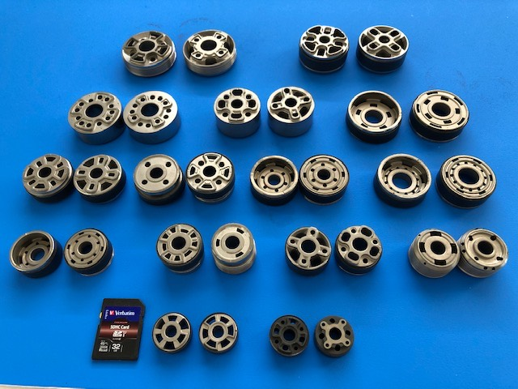
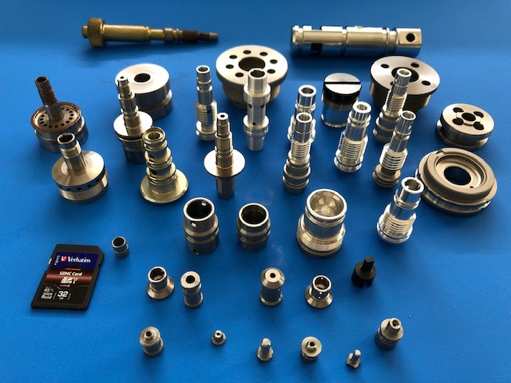
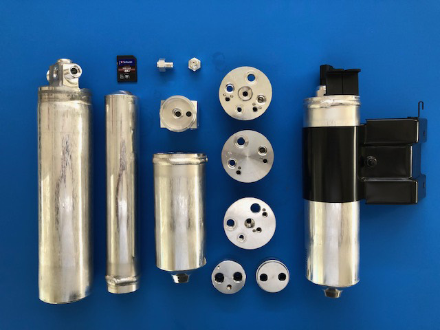
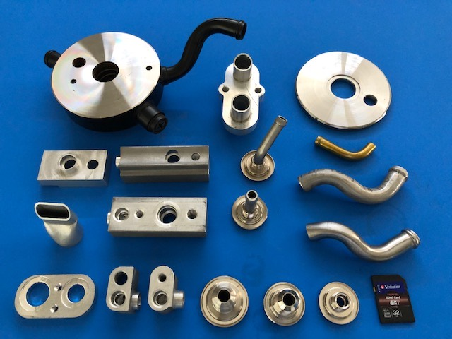
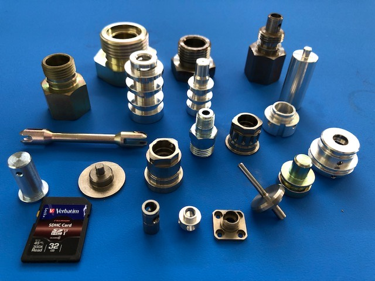

埼玉県加須市・1964年創業
CNC自動旋盤51台で、
φ5からφ32を削ります。
自動車用ショックアブソーバの焼結ピストン、油圧機器部品、レシーバードライヤー、ブレーキ関連部品。CNC複合旋盤による背面同時加工で、アルミ・ステンレス・鉄系材を扱います。加工から組立まで一貫して承ります。

（写真内のSDカードは大きさの目安として現行サイトに掲載されているものです）
51台
CNC自動旋盤
131台
加工設備の合計
φ5〜φ32
CNC複合旋盤の加工径
1964年
創業
PRODUCTS
製品一覧
自動車部品のほか、精度と耐久性が求められるあらゆる産業の精密部品づくりに対応します。




FACILITY
設備一覧
CNC自動旋盤51台を中心に、加工設備131台を保有しています。うち21台がミヤノ製で、CNC自動旋盤の4割強を占めます。
| 設備名 | 主なメーカー | 台数 |
|---|---|---|
| CNC自動旋盤 | ミヤノ／シチズン／高松／ツガミ／ワシノ／スター／北村／村田機械／森精機／野村精機 | 51 |
| 専用機 | 各種 | 19 |
| 自動旋盤 | ミヤノ／ツガミ／大和精機 | 11 |
| ボール盤 | アシナ／ブラザー | 11 |
| ベンチレース | エグロ／北村 | 10 |
| フライス盤 | 静岡鉄工所／井上／長谷川 | 5 |
| タッピング | ブラザー | 5 |
| マシニングセンター | 森精機／スギノマシン | 3 |
| NCボール盤 | ファナック | 3 |
| 単能盤 | 富士機械／富士精機 | 3 |
| ツースピンドルNC旋盤 | 村田機械／富士機械 | 2 |
| 旋盤 | 津田 | 2 |
| NC円筒研削盤 | ツガミ | 1 |
| 成形研削盤 | クロダ | 1 |
| 平面研削盤 | クロダ | 1 |
| センターレス | 大宮製作所 | 1 |
| ネジ転造盤 | ニッセー | 1 |
| 切断機 | 津根マシーン | 1 |
| 合計 | ほかにアルゴン溶接機・ラップ盤・検査機器 | 131 |
| 設備名 | 形式 | メーカー | 台数 |
|---|---|---|---|
| 投影機 | PJ311 | ミツトヨ | 2 |
| 画像寸法測定機 | IM6120 | キーエンス | 1 |
| 形状測定機 | 1600B-100 | 東京精密 | 1 |
| アラサ測定機 | サーフコム1400A | 東京精密 | 1 |
| 工具顕微鏡 | TM321 | ミツトヨ | 1 |
| 顕微鏡 | SMZ-10 | ニコン | 1 |
| 硬度計 | ロックウェル AR-10 | アカシ | 1 |
| 電気マイクロ | — | ミツトヨ | 1 |
| 合計 | 8機種 | 9 | |
※ 現行サイトでPDFとして公開されている「主要設備一覧」を、種別ごとに集計してHTMLの表にしたものです。個々の機種名・型式はPDFに記載があります。
COMPANY
会社案内
【社是】「全員の技術力、管理力そして活力を結集させ、世界トップレベルの製品をお客様に提供しよう」
株式会社榎本精機は1964年の創業以来半世紀以上にわたり、機械加工のスペシャリストとして、自動車部品業界を中心とした精密加工部品をお客様へ提供して参りました。21世紀を担う企業に求められているのは、積み重ねられた探求心の末に生み出される革新的なモノづくりではないでしょうか。私たちは与えられた課題をこなすだけで満足するのではなく、ポジティブな発想と柔軟な思考によって更なる感動を生み出し、その達成感を大切にしたいと考えます。
業界トップの仕上げ部品加工メーカー
一貫生産体制で完成部品を提供します。品質・コスト・搬入でお客様のNo.1評価を獲得することを目指しています。
精密加工のスペシャリスト
斬新な発想から産まれる生産技術力、幅広いニーズに対応できる加工技術、特産品を産み出す研究開発。
グローバル市場での国際貢献
国際基準の品質・コストで特殊技術製品を供給し、海外市場への技術参入を進めます。
- 社名
- 株式会社 榎本精機（ENOMOTO SEIKI CO.,LTD.）
- 所在地
- 〒347-0005 埼玉県加須市下樋遣川（しもひやりかわ）379-3
TEL 0480-68-5561（代） ／ FAX 0480-68-5121 - 設立
- 1964年（昭和39年）10月1日
- 資本金
- 1,200万円
- 代表者
- 代表取締役社長 榎本 宗晴
- 従業員数
- 51名
- 事業内容
- 自動車用精密部品、油圧機器部品ほかの製造
- 認証
- ISO9001（2003年10月取得。1997年10月に ISO9002 取得）
- 主要取引先
- Astemo株式会社／マレリ株式会社／ハイリマレリジャパン株式会社／埼玉機器株式会社／クノールブレムゼ商用車システムジャパン株式会社／株式会社金子製作所／三輪精機株式会社
- 取引銀行
- 埼玉りそな銀行（加須支店）／足利銀行（加須支店）／三菱東京UFJ銀行（大宮駅前支店）
HISTORY
沿革
板橋区の有限会社から、加須市の一貫生産工場へ。取引の始まりと、生産品目が増えていった記録です。
- 1964.10
- 東京都板橋区に有限会社榎本精機を設立
- 1965.07
- 東邦鉄工株式会社（現・カルソニックカンセイ栃木株式会社）と取引開始
- 1966.07
- 埼玉県戸田市に工場を移転
- 1969.05
- 埼玉県加須市に工場を移転
- 1970.05
- 株式会社昭和製作所（現・株式会社ショーワ）と取引開始
- 1981.11
- 油圧機器部品の量産を開始
- 1983.06
- S/A用焼結ピストンの穴加工を開始（専用機を設置）
- 1987.04
- R/V用ケース部品の生産を開始
- 1989.02
- 有限会社から株式会社へ変更
- 1990.02
- 第一工場 南棟を増設
- 1990.07
- 自動車ブレーキ部品の生産を開始
- 1991.10
- ショックアブソーバー用焼結ピストンの生産を開始
- 1993.04
- パワーステアリング用部品の加工を開始（ショーワ御殿場工場）
- 1997.10
- ISO9002 認証取得
- 2000.09
- ショックアブソーバー用焼結ピストン BND の生産を開始
- 2003.10
- ISO9001 認証取得
- 2006.12
- 第二工場を増築
- 2007.01
- パワーステアリング用Vシャフト専用ラインを導入
- 2013.04
- レシーバードライヤー用ヘッドブロックの生産を開始
- 2018.09
- レシーバードライヤー（L/T）組立ラインの生産を開始
- 2019.05
- リリーフバルブ（R/V）組立ラインの生産を開始※現行サイトの表記は「リリーフバブル」
加工から組立まで、まとめて承ります。
CNC複合旋盤による背面同時加工で、φ5からφ32まで。アルミ・ステンレス・鉄系材に対応します。レシーバードライヤーのように、組立てまでの一貫生産の実績もあります。
0480-68-5561
FAX 0480-68-5121
〒347-0005 埼玉県加須市下樋遣川379-3